This group project worked with the Jacksonville Zoo to help re-design the Rhino Exhibit as well as promote for a Bowling for Rhinos Campaign. The Bowling for Rhinos Campaign is an event held to help raise awareness about Rhino preservation
as well as inform about Umbrella Species. Our goal was to make the exhibit more informative and engaging.
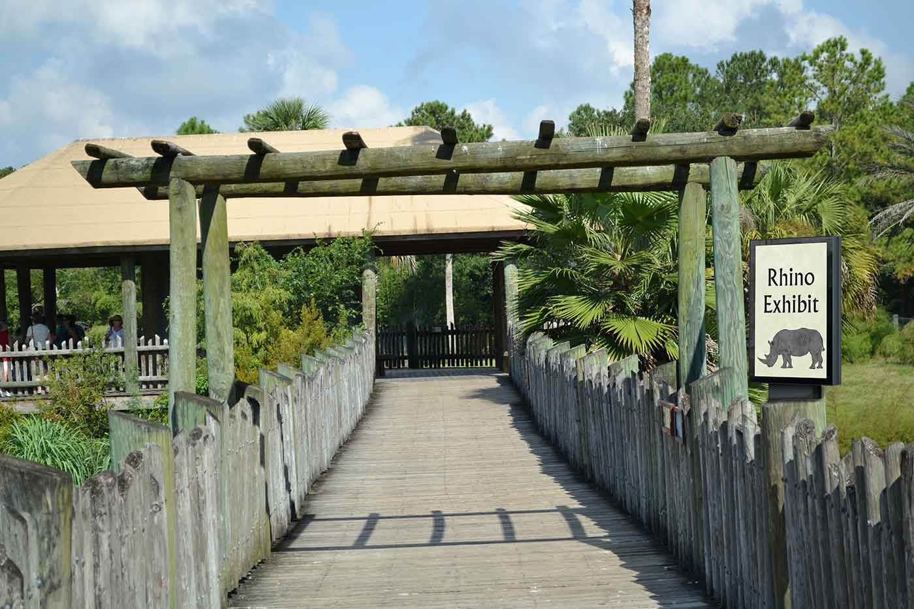
Rhino Exhibit Entrance
Rhino Wall
The before and after of the main wall section in the exhibit. By removing the bench we are able to place a life-sized cutout of a rhino. The life size cutout has sliding doors that hide or reveal facts about the rhinos. This life size
cutout offers viewers the ability to get an idea of scale in comparing them selves to the size of a rhino upclose. This section can act as a photo oportunity, as well as an informative installation.
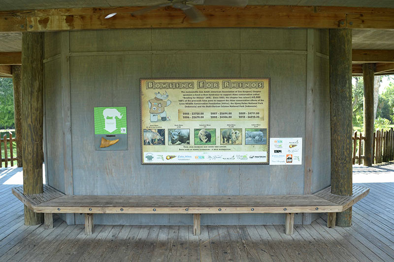
Wall Before
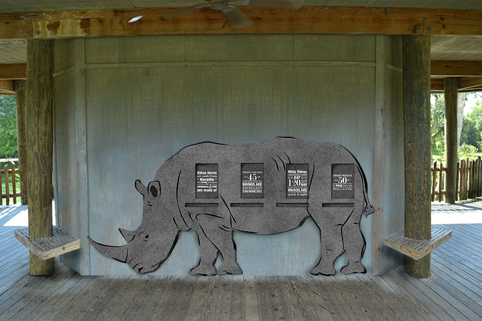
Wall After
Binocular Stand
To bring more attention to the binocular stand and increase use, we incoporated an interactive sign that lists all the animals in the exhibit, and prompts viewers to spot each one. With this being a large exhibit often times the animals
are far from the viewing area. This promotes the use of the binocular stand.
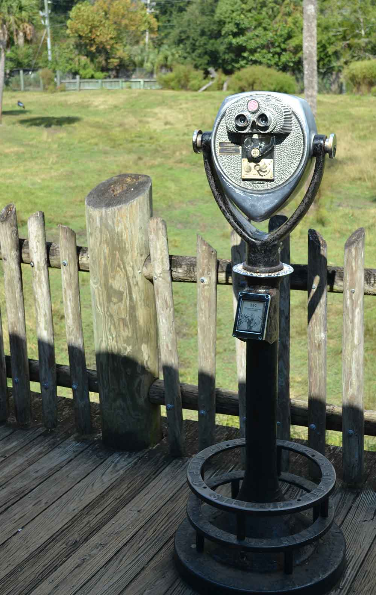
Binocular Stand Before
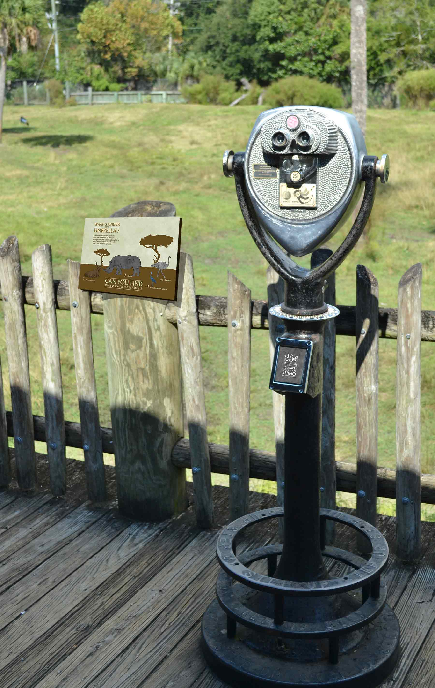
Binocular Stand After
Umbrella Species
This interactive sign discusses what Umbrella Species are and prompts viewers to spot all four of the animals within the exhibit. The game is conveniently placed so that if some of the animals are too far away to see, the binoculars are
there for closer look.
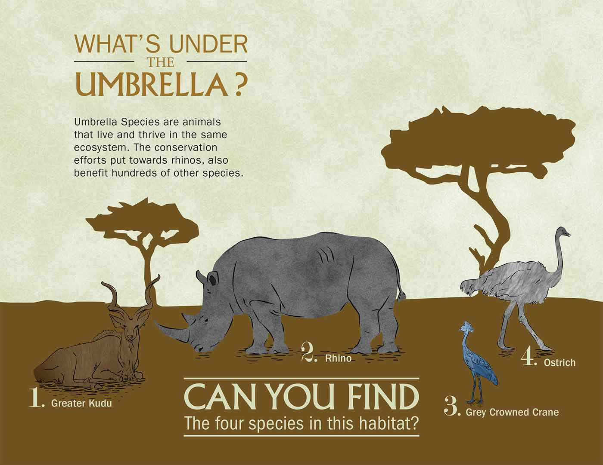
Umbrella Species Interactive Sign
Binocular Stand Display
After doing research, we found that most people did not use the binocular stand for a few common reasons. They did not know how long it lasted, where the proceeds went, or how much the cost was. We solved these promlems by
placing the necessary information in the display.
Binocular Display Info
Exhibit Side Wall
Entering the exhibit from the other direction does not offer any signage or information. To put the space to good use, we encorporated a donation box attached to a motion video discussing the Bowling for Rhinos campaign. There is a wood
Cutout of a rhino smashing through bowling pins for added effect. This is also where the Bowling for Rhinos Brochure will be.
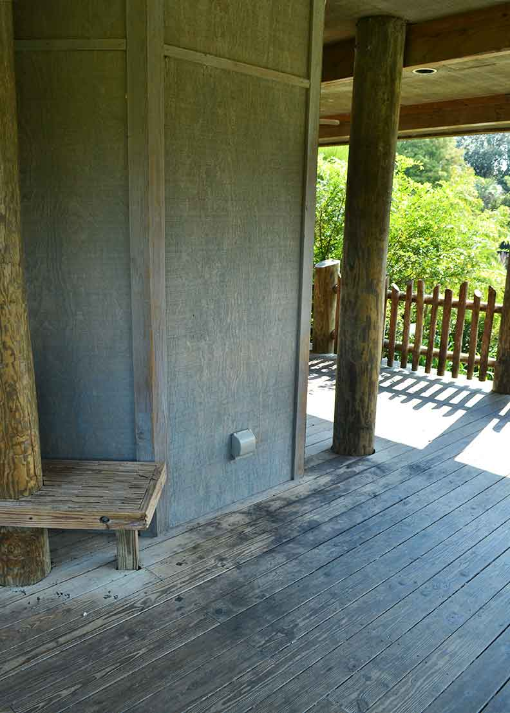
Side Wall Before
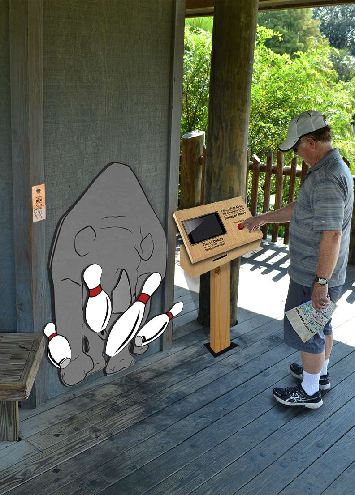
Side Wall After
BFR Brochure
This is the brochure for the Bowling for Rhinos campaign. The brochure offers a couple of facts to the guests as well as offering information for the time, date and location of the next event.
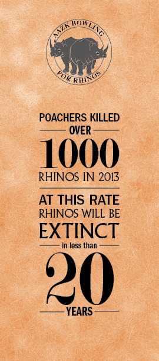
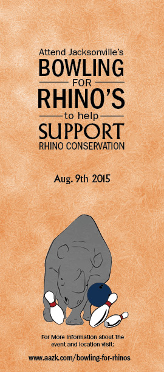
Bowling For Rhinos Brochure
Donation Box / Motion Video
This is the housing we designed for the donation box as well as the motion video. The motion video discusses more about Bowling for Rhinos events, Umbrella Species, and ways that we can help to save the Rhinos.
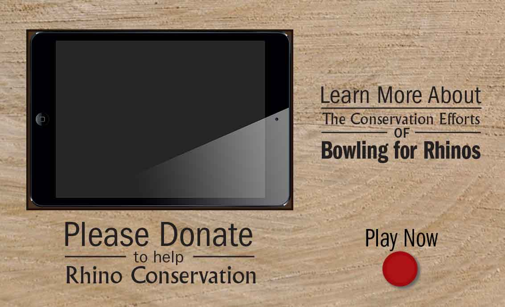
Bowling for Rhinos Video Display
Website Re-Design
The new website would offer easier navigation to important information. If would allow the user to jump quickly from section to section with a streamlined navigation.